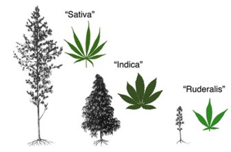
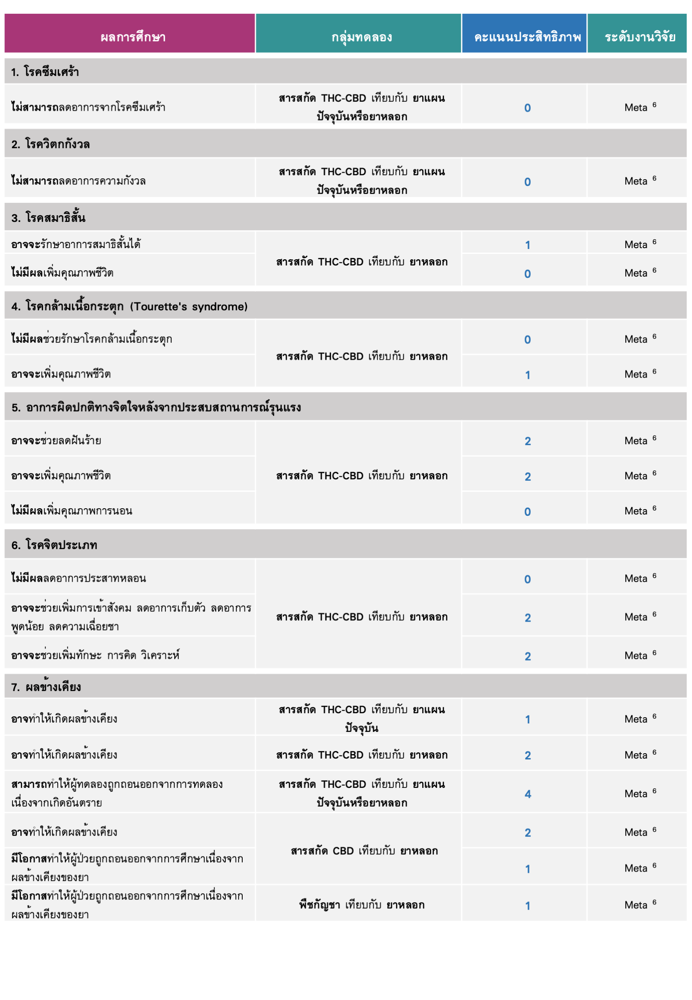
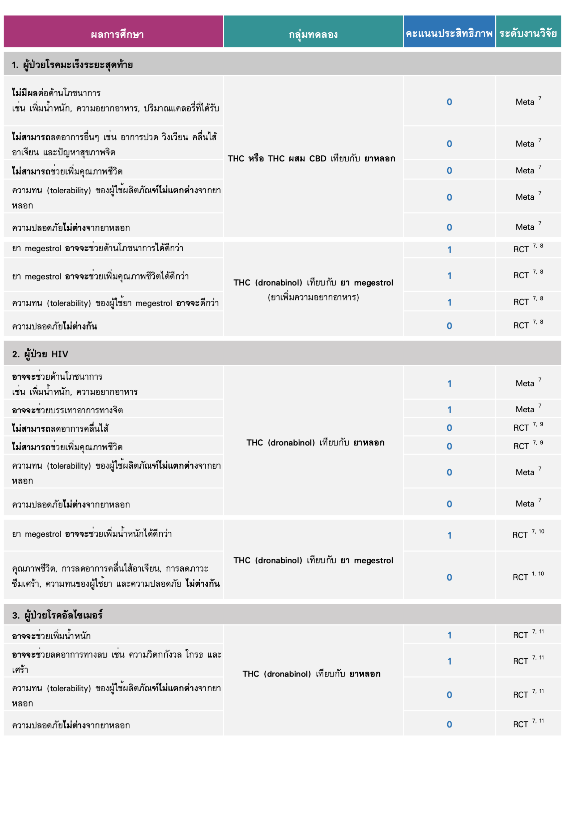
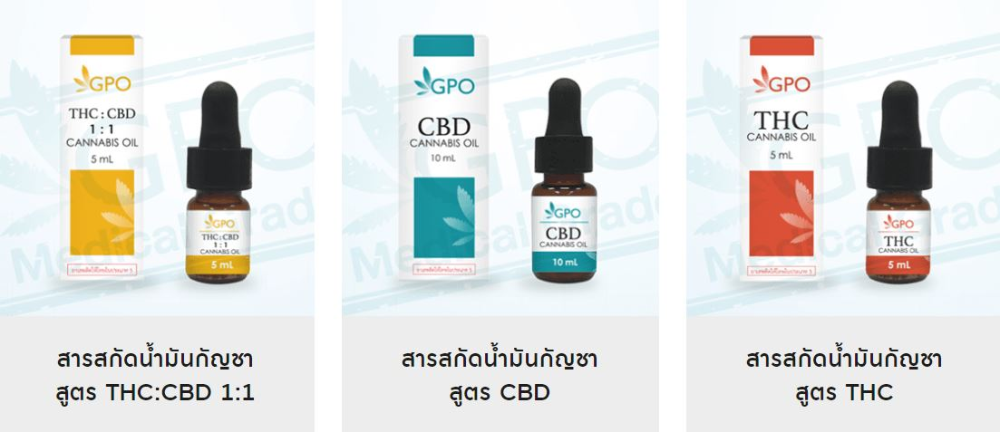

กัญชา (Marijuana)

ข้อมูลทั่วไป
ชื่อวิทยาศาสตร์
Cannabis sativa L.
ชนิดและลักษณะ
การแบ่งสายพันธุ์ย่อย มีวิธีการแบ่งหลายแบบ และมีการผสมข้ามสายพันธุ์ (hybridization) ด้วย อาจทำให้เกิดความสับสนในการเรียกชื่อ [1,2]
ดังนั้น การนำกัญชาไปใช้จึงแบ่งตามปริมาณสาร THC/CBD และวัตถุประสงค์การใช้เป็นหลัก
ตัวอย่างการแบ่งสายพันธุ์
1. แบ่งตาม formal taxonomy [3] แบ่งเป็น supspecies และ varieties เช่น
C. sativa subsp. sativa
C. sativa subsp. indica (THC rich)
2. แบ่งตาม vernacular taxonomy [4] (ชื่อพื้นเมือง) เช่น
"Sativa" พบมากในไทย (THC>CBD)
"Indica" พบมากในต่างประเทศ (THC เท่าๆ CBD)
"Ruderalis" พบมากในต่างประเทศ (THC เท่าๆ CBD)>
แต่ละสายพันธุ์ มีลักษณะต่างกัน ทั้งลักษณะดอก ใบ ความสูงลำต้น ปริมาณสารกลุ่ม cannabinoids (THC และ CBD)
ตามกฎหมาย (ประกาศกระทรวง 2562) กำหนดว่า ลักษณะของกัญชา คือมีปริมาณ THC ในใบและดอก > 1% ของน้ำหนักแห้ง
ส่วนที่เป็นยาเสพติดประเภทที่ 5 ได้แก่ ดอก และ เมล็ด
ส่วนที่ไม่ได้เป็นยาเสพติด ได้แก่ ใบ ลำต้น กิ่งก้าน ราก กากจากการสกัด (THC < 0.2%) รวมถึงสารสกัด CBD (THC < 0.2%)
ดอก
พบได้ทั้งเพศผู้ เพศเมีย สองเพศ
ดอกเพศเมียที่ไม่ถูกผสม (sinsemilla) จะมีสาร cannabinoids สูง
สารออกฤทธิ์
1. กลุ่ม cannabinoids : สารหลัก ได้แก่
- THC (tetrahydrocannabinol): ทำให้เมา เสพติด และมีทำให้เกิดพิษหากได้รับมากเกิน แต่ในขนาดที่เหมาะสม จะช่วยต้านอาเจียน ลดปวด
- CBD (cannabidiol): ไม่ทำให้เมา ทำให้ผ่อนคลาย ลดปวด ต้านการชัก ลดการหดเกร็งกล้ามเนื้อ
2. กลุ่ม terpenes: สารที่เกี่ยวข้องกับกลิ่นของพืช เช่น
- myrcene สามารถเพิ่มการดูดซึมของ THC
- limonene
- humulene
- pinene
แนวทางการใช้ทางยา ตามกรมการแพทย์ ม.ค. 2563 [5]
*การใช้ผลิตภัณฑ์กัญชา ต้องอยู่ภายใต้การดูแลของบุคลากรทางการแพทย์ที่ผ่านการอบรม
*สารสกัดกัญชาที่ในการรักษาแต่ละโรค/ภาวะ มีอัตราส่วน THC/CBD แตกต่างกัน
การใช้กัญชาทางการแพทย์
มีทั้งหมด 6 โรค/ภาวะ ที่ได้ประโยชน์ มีหลักฐานทางวิชาการชัดเจน:
1. ภาวะคลื่นไสอาเจียนจากเคมีบําบัด (chemotherapy induced nausea and vomiting)
2. โรคลมชักที่รักษายาก และโรคลมชักที่ดื้อต่อยารักษา (intractable epilepsy)
3. ภาวะกล้ามเนื้อหดเกร็ง (spasticity) ในผู้ป่วยโรคปลอกประสาทเสื่อมแข็ง (multiple sclerosis)
4. ภาวะปวดประสาท (neuropathic pain)
5. ภาวะเบื่ออาหารในผู้ป่วย AIDS ที่มีน้ำหนักตัวน้อย
6. การเพิ่มคุณภาพชีวิตในผู้ป่วยที่ได้รับการดูแลแบบประคับประคอง
กลุ่มที่น่าจะได้ประโยชน์ มีหลักฐานทางวิชาการที่มีคุณภาพสนับสนุนมีจํานวนจํากัด:
1. โรคพาร์กินสัน
2. โรคอัลไซเมอร์
3. โรควิตกกังวลไปทั่ว (generalized anxiety disorders)
4. โรคปลอกประสาทอักเสบ (demyelinating diseases) อื่นๆ อาทิ neuromyelitis optica และ autoimmune encephalitis
กลุ่มที่อาจจะได้ประโยชน์ในอนาคต เนื่องจากในปัจจุบันข้อมูลหลักฐานทางวิชาการที่สนับสนุนยังมีไม่เพียงพอ:
- การใช้กัญชารักษาโรคมะเร็ง: มีความจําเป็นต้องศึกษาวิจัยในหลอดทดลอง ความปลอดภัยและประสิทธิผลในสัตว์ทดลอง ก่อนการศึกษาวิจัยในคน
ข้อมูลประสิทธิภาพของกัญชา
ประสิทธิภาพของกัญชาต่อโรคความผิดปกติทางจิต
ประสิทธิภาพของกัญชาต่อการรักษาแบบประคับประคอง
ผลข้างเคียงและความเป็นพิษ [5]
อาการไม่พึงประสงค์ของสารสกัดกัญชา ขึ้นอยู่กับปริมาณที่ได้รับต่อครั้ง ความทนของผู้ใช้ และวิธีการนำเข้าสู่ร่างกาย
ซึ่งส่งผลต่อความเร็วและความรุนแรงต่อการเกิดผลข้างเคียง เช่น
1.ชนิดสูด ระยะเวลาออกฤทธิ์จะเกิดขึ้นภายใน 15-30 นาที
2.ชนิดรับประทาน เริ่มออกฤทธิ์ประมาณ 30 นาทีหลังรับประทาน เพราะต้องผ่านตับเสียก่อน
3.ชนิดหยดใต้ลิ้น ระยะเวลาออกฤทธิ์จะเกิดขึ้นภายใน 15 นาที
พิษที่เกิดขึ้น มักเกิดกับ ระบบประสาทส่วนกลาง ระบบหลอดเลือดหัวใจ และระบบหลอดเลือดสมอง
พิษต่อระบบประสาทส่วนกลาง
เฉียบพลัน: ขาดสติ, ขาดความสนใจในสิ่งต่างๆ, เคลิ้ม, กระสับกระส่าย, ความจำระยะสั้นหายไป, เดินเซ, พูดไม่ชัด, การรับรู้ผิดปกติ
เมื่อใช้ต่อกันเป็นเวลานาน: หายใจไม่ออก
พิษต่อระบบหลอดเลือดหัวใจ
เฉียบพลัน: ใจสั่น
เมื่อใช้ต่อกันเป็นเวลานาน: หลอดเลือดหดตัว, หัวใจเต้นช้าลง, กล้ามเนื้อหัวใจขาดเลือด, หัวใจเต้นผิดจังหวะ และ หัวใจล้มเหลว
พิษต่อระบบหลอดเลือดสมอง
เมื่อใช้ต่อกันเป็นเวลานาน: หลอดเลือดในสมองขาดเลือด (stroke) และ ลมชัก
ข้อควรระวังและข้อห้ามใช้ [5]
ห้ามใช้ผลิตภัณฑ์ที่มี THC เป็นส่วนประกอบ ในกรณีต่อไปนี้
1. ผู้มีประวัติแพ้ผลิตภัณฑ์ที่ได้จากการสกัดกัญชา หรือส่วนประกอบอื่นในตำรับ
2. ผู้ที่มีมีอาการรุนแรงหรือปัจจัยเสี่ยงของโรคหัวใจและหลอดเลือด เช่น unstable cardio-pulmonary disease
(angina, peripheral vascular, disease, cerebrovascular และ arrythmia)
3. ผู้ที่มีประวัติโรคจิต หรือ มีอาการของโรคอารมณ์แปรปรวน (concurrent active mood disorder) หรือ โรควิตกกังวล (anxiety disorder)
4. สตรีมีครรภ์ ให้นมบุตร หรือวางแผนตั้งครรภ์
ข้อควรระวัง:
1. ผู้ป่วยอายุน้อยกว่า 25 ปี เนื่องจากมีผลข้างเคียงต่อสมองที่กำลังพัฒนาได้
2. ผู้ที่เป็นโรคตับ
3. ผู้ที่ติดสารเสพติด บุหรี่ หรือดื่มสุราอย่างหนัก
4. ผู้ใช้ยาอื่นๆ โดยเฉพาะกลุ่ม opioids และยากล่อมประสาท เช่น benzodiazepines
5. ผู้ป่วยเด็กและผู้สูงอายุ เนื่องจากไม่มีข้อมูลทางวิชาการมากเพียงพอ
ปฏิกิริยาทางยา [5]
สาร THC และ CBC ถูกกำจัดทางตับผ่านเอนไซม์ CYP
ยาต่อไปนี้เกิดปฏิกิริยากับสาร THC หรือ CBD
1. THC และ CYP2C9 inhibitors เช่น
amiodarone, fluconazole, ibuprofen, mefenamic
2. THC&CBD และ CYP3A4 inhibitors เช่น
clarithromycin, fluconazole, lopinavir/r
3. CBD และ CYP2C19 inhibitors เช่น
omeprazole, fluoxetine, isoniazid
ผลิตภัณฑ์ยาที่เกี่ยวกับกัญชา
ในประเทศไทย มีผลิตภัณฑ์ที่พัฒนาจากสมุนไพรที่มีกัญชาปรุงผสม เพื่อมุ่งหวังใช้ประโยชน์ตามการแพทย์แผนปัจจุบัน
เช่น ตำรับสารสกัดน้ำมันกัญชาที่ผลิตโดยองค์การเภสัชกรรม (GPO)
- CBD oil : สำหรับ โรคลมชักที่รักษายาก และโรคลมชักที่ดื้อต่อการรักษา (intractable epilepsy)
- THC oil : สำหรับผู้ป่วยที่มีภาวะคลื่นไส้อาเจียนจากเคมีบำบัด และ ภาวะปวดประสาท (neuropathic pain)
- CBD:THC 1:1 oil : สำหรับ ภาวะกล้ามเนื้อหดเกร็ง (spasticity) ในผู้ป่วยโรคปลอกประสาทเสื่อมแข็ง (multiple sclerosis)
นอกจากนี้ มีตำรับยาแผนไทยที่มีกัญชาปรุงผสมอยู่
เป็นตำรับยาแผนไทยของแพทย์แผนไทย แพทย์แผนไทยประยุกต์
และหมอพื้นบ้านที่ได้รับการรับรองจากกรมการแพทย์แผนไทยและการแพทย์ทางเลือก เช่น ตำรับน้ำมันหมอเดชา ตำรับน้ำมันจอดกระดูก
นอกจากนี้ในต่างประเทศ:
- Sativex (THC:CBD 1:1) oromucosal spray
- Epidiolex (CBD) oral solution
- Dronabinol (THC) capsule or liquid
- Nabilone (THC) capsule
ข้อมูลเพิ่มเติม คลิก (กองควบคุมวัตถุเสพติด กัญชา)
ข้อมูลเพิ่มเติม คลิก (องค์การเภสัชกรรม: medical cannabis)
คลิกเพื่อค้นหา สถานที่ให้บริการ กัญชาทางการแพทย์ไทย
เอกสารอ้างอิง
1. McPartland JM. Cannabis Systematics at the Levels of Family, Genus, and Species.
Cannabis and Cannabinoid Research. 2018;3(1):203-212. doi:10.1089/can.2018.0039
2. Pollio A. The Name of Cannabis : A Short Guide for Nonbotanists.
Cannabis and Cannabinoid Research. 2016;1(1):234-238. doi:10.1089/can.2016.0027
3. Small E, Cronquist A. A Practical and Natural Taxonomy for Cannabis.
Taxon. 1976;25(4):405-435. doi:10.2307/1220524
4. Anderson LC. LEAF VARIATION AMONG CANNABIS SPECIES FROM A CONTROLLED
GARDEN. Botanical Museum Leaflets, Harvard University. 1980;28(1):61-69.
5. คำแนะนำการใช้กัญชาทางการแพทย์ (Guidance on cannabis for medical use).
กรมการแพทย์ กระทรวงสาธารณสุข. 2563
6. Black N, Stockings E, Campbell G, et al. Cannabinoids for the treatment of
mental disorders and symptoms of mental disorders: a systematic review and meta-analysis.
The Lancet Psychiatry. 2019;6(12):995-1010. doi:10.1016/S2215-0366(19)30401-8
7. Mücke M, Weier M, Carter C, et al. Systematic review and meta-analysis of cannabinoids
in palliative medicine: Cannabinoids in palliative medicine.
Journal of Cachexia, Sarcopenia and Muscle. 2018;9(2):220-234. doi:10.1002/jcsm.12273
8. Jatoi A, Windschitl HE, Loprinzi CL, et al. Dronabinol versus megestrol acetate versus
combination therapy for cancer-associated anorexia: a North Central Cancer Treatment
Group study. J Clin Oncol. 2002;20(2):567-573. doi:10.1200/JCO.2002.20.2.567
9. Beal JE, Olson R, Laubenstein L, et al. Dronabinol as a treatment for anorexia associated with weight loss
in patients with AIDS. J Pain Symptom Manage. 1995;10(2):89-97. doi:10.1016/0885-3924(94)00117-4
10. Timpone JG, Wright DJ, Li N, et al. The safety and pharmacokinetics of single-agent and
combination therapy with megestrol acetate and dronabinol for the treatment of HIV wasting syndrome.
The DATRI 004 Study Group. Division of AIDS Treatment Research Initiative.
AIDS Res Hum Retroviruses. 1997;13(4):305-315. doi:10.1089/aid.1997.13.305
11. Volicer L, Stelly M, Morris J, McLaughlin J, Volicer BJ.
Effects of dronabinol on anorexia and disturbed behavior in patients with Alzheimer’s disease.
Int J Geriatr Psychiatry. 1997;12(9):913-919.